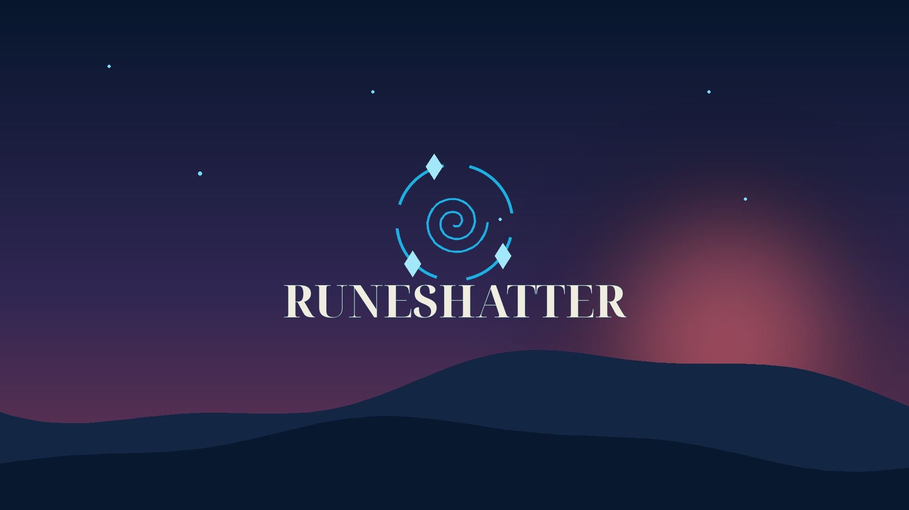
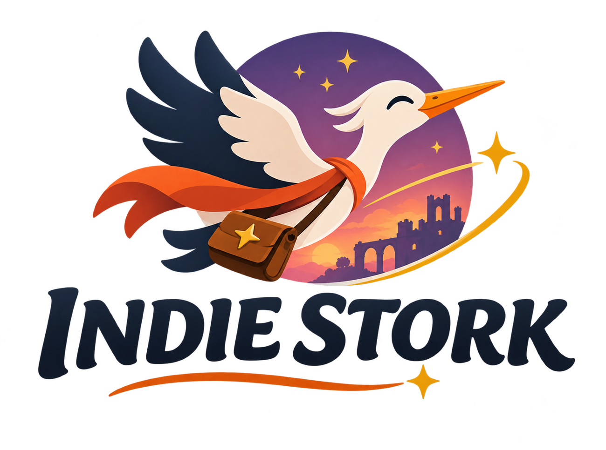
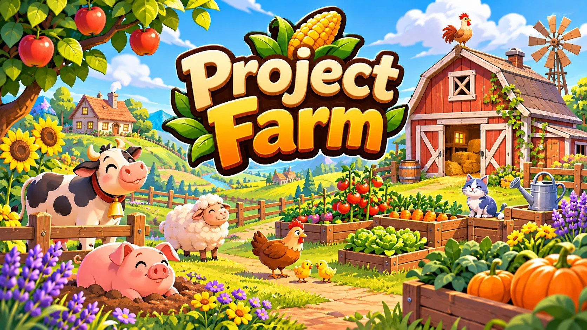
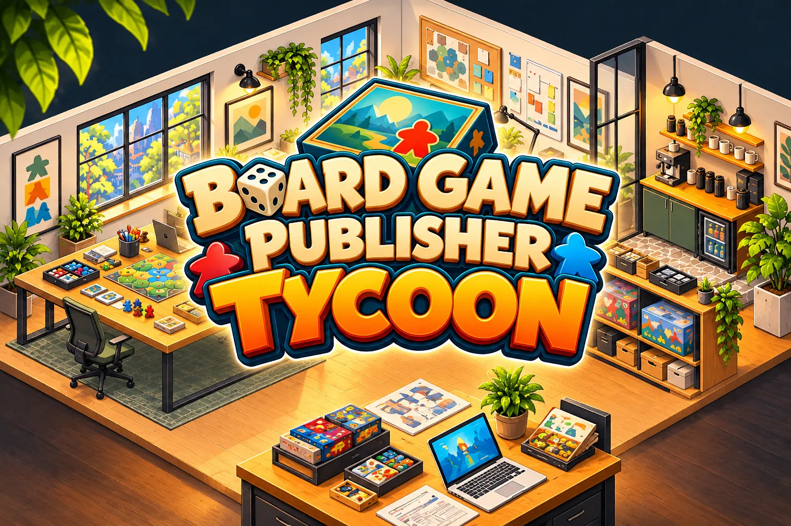
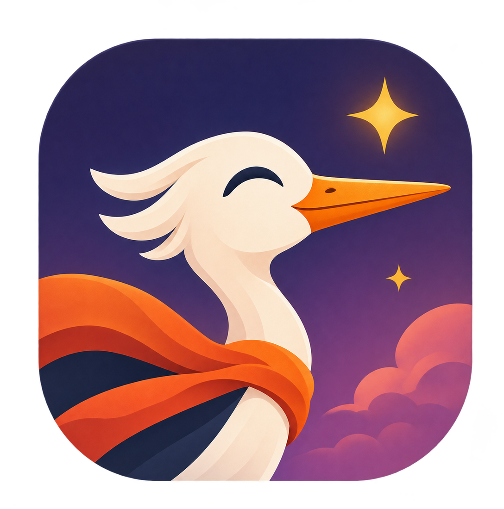

Runeshatter
A mysterious fantasy journey where matching runes becomes a test of strategy, and one hero grows stronger with every challenge.
PROJECT 01We make games filled with curiosity, imagination and a sense of adventure. Every great journey begins with a small idea.

THE STORY SO FAR
Indie Stork is a small, independent game studio from Poland. We love creative systems, memorable worlds, and the simple joy of discovering something new. From cozy management games to fantasy adventures, we follow ideas worth exploring.
WHAT WE'RE MAKING
Different ideas. Different genres. One love for games.

A mysterious fantasy journey where matching runes becomes a test of strategy, and one hero grows stronger with every challenge.
PROJECT 01
Build a farm, grow at your own pace and bring a lively little world to life in a cozy single-player experience.
PROJECT 02
Turn your passion for tabletop games into a creative studio-building and management adventure.
PROJECT 03Visuals are conceptual and do not represent final gameplay. No release dates have been announced.
OUR LITTLE MANIFESTO
We believe the best worlds begin with curiosity — and grow with every player who steps inside.
STAY IN THE LOOP
We're building our games and home on the web. More news, updates and ways to get in touch will appear here as the studio grows.
